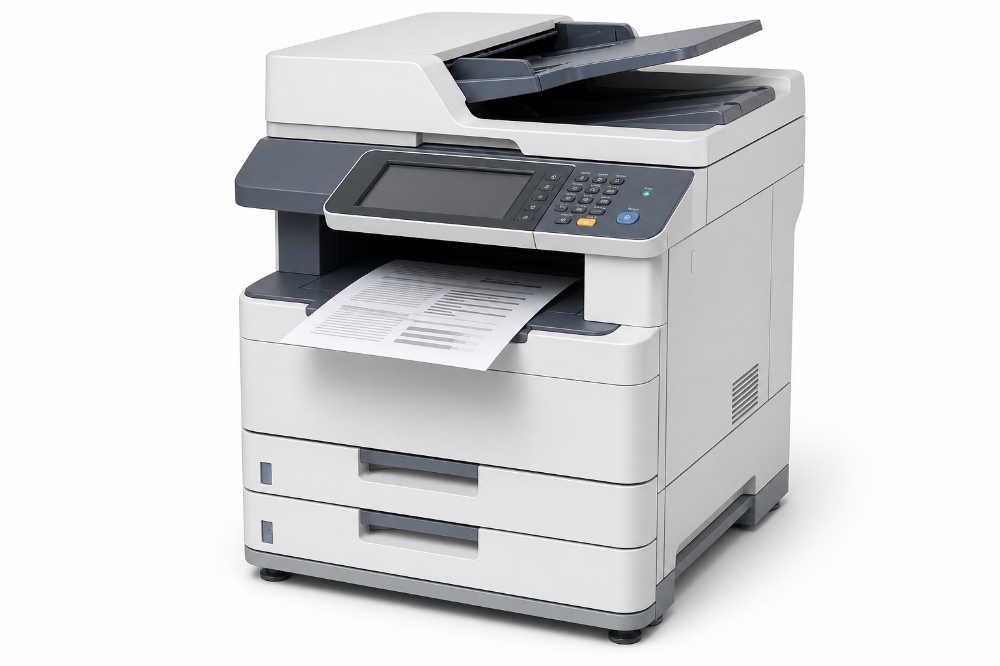

旧型機情報
MI-4040 Archive は販売終了済みの文書復元ログ対応モデルです。公開情報の確認には、製品名、更新履歴、導入事例を参照してください。
仕様
| 販売状況 | 販売終了 |
|---|---|
| 文書保持期間 | 72時間 |
| サポート終了日 | 未定 |
| 対象ファームウェア | Ver.2.17.04 以降 |
| ログ形式 | 出力、削除、再出力、復元照合を時系列で記録 |
Ver.2.17.04 ご利用者への注意
更新後72時間以内に削除された文書について、操作履歴と出力履歴の表示順が一致しない場合があります。表示上は削除済みであっても、復元ログの確認が完了するまで再投入を避けてください。